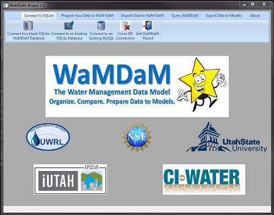

Download¶
WaMDaM Wizard is a desktop data loader from a spreadsheet template to a SQLite database. The SQLite database is created based on the WaMDaM data model.
1. Download the WaMDaM Excel Workbook¶
Templates for Input Data to prepare your data into it. Each dataset into one workbook
2. Download the Wizard GUI¶
| Choose one | |||
|---|---|---|---|
| Executable (.exe) | Download | Download | |
| Installer (msi) | Download | Download | |
| Run from source code |

Steps to use WaMDaM¶

Wizard info for developers¶
-
Here is the schema that the Wizard works within: WaMDaM Schema.
-
The Wizard is built using Python 2.7 and the wxPython GUI library with the help of wxFormBuilder.
Why WaMDaM Wizard?¶
The WaMDaM Wizard is an open-source, cross-platform, Python-based graphical user software to interact with WaMDaM database. By using the Wizard, users are not expected to understand the underlying WaMDaM database of schema. Users just need to understand how to fit their data into these concepts: ObjectType, Attribute, Instance, Network, and Scenario. The Wizard mainly allows users to automatically:
-
1. Read, validate, and load data from a spreadsheet template in SQLite
-
2. Use data preparation tools to help manipulate and transform users data to fit into the spreadsheet template.
-
3. Import data directly from supported web-services (e.g., time series data from CUAHSI)
-
4. Use pre-defined functions to query and compare scenario data from multiple datasets loaded in WaMDaM
-
5. Export data loaded into WaMDaM to multiple supported models (in-progress)